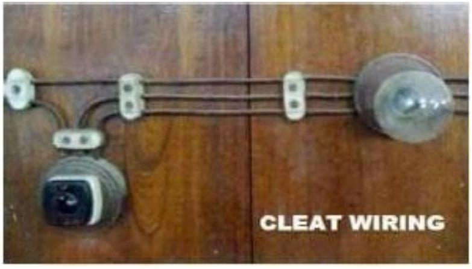

Installation Planning & Wiring Types
INSTALLATION PLANNING AND DESIGNS
2. Electrical wiring is generally refers to insulated conductor used to carry current and associated device used to provide power in buildings and structures, commonly referred to as building wiring.
Types of wiring according to uses:
- Domestic wiring.
- Commercial wiring.
- Industrial wiring.
FACTOR AFFECTING THE CHOICE OF WIRING:
- Durability: Type of wiring selected should conform to standard specifications, so that it is durable i.e. without being affected by the weather conditions, fumes etc.
- Safety: The wiring must provide safety against leakage, shock and fire hazards for the operating personnel.
- Appearance: Electrical wiring should give an aesthetic appeal to the interiors.
- Cost: It should not be prohibitively expensive.
- Accessibility & Flexibility: The switches and plug points provided should be easily accessible. There must be provision for further extension of the wiring system, if necessary.
- Maintenance Cost: The maintenance cost should be a minimum
- Mechanical safety: The wiring must be protected against any mechanical damage.
Types of Wiring
- Commonly used types of wiring systems for residential buildings, commercial buildings etc are:
- Cleat wiring
- Wooden casing and capping wiring
- C. T. S or T. R. S. wiring
- Metal Sheathed or Lead Sheathed wiring
- Conduit wiring
Cleat Wiring
- Cleat wiring is normally used for temporary wiring purpose. E.g. functions, marriages...etc.
- In this type of wiring vulcanized india rubber(V.I.R) or polyvinyl chloride(PVC) insulated wires are used as conductors. Wires are held by the help of porcelain cleat which are placed 6 mm off the walls or ceilings.
- As shown in dia. Grooves are provided in the base portion of the cleat for accommodating the wires. This System uses insulated Cables sub protected in porcelain cleats. Wiring is done as shown in figure:
Advantages:
- Cheapest system of internal wiring
- Installation and dismantlement is easy and quick
- Material is recoverable after the dismantlement
- Inspection, alternations and additions can be easily made
- Skill required is little.
Disadvantages:
- It is not good looking
- Quit temporary and perishes quickly
- Wire are exposed to mechanical injury
- Oil and smoke are injurious to V.I.R insulation
- Not suitable for domestic premises.
Wooden casing and capping wiring
- In this cable is run through a wood casing having grooves.
- The wood casing is of required fixed length with parallel grooves that accommodates the cables.
- The wooden casing is fixed to the walls or ceiling with screws.
- After placing the cables inside the grooves of casing, a wooden cap with grooves is placed on it to cover the cables.
- This type of wiring is suitable for low voltage domestic installations in dry places and where there is no risk of fire hazards
Advantages:
- Better appearance than cleat wiring
- Cheap in cost
- Easy to install and rewire
- Easy to inspect by opening the capping
Disadvantages:
- Not suitable in damp places
- Risk of fire
- This type of wiring can only be used on surface and cannot be concealed in plaster.
- Since it requires better workmanship, labour cost is more
- This type of wiring is also used for house wiring and is quite cheap.
- Cab tyre sheathed (C.T.S) wire or tough rubber sheathed (T.R.S) wire is normally used as conductor for this wiring.
- The wires are run on the teak wooden battens which are fixed on the wall or the ceiling by means of screws and wooden plugs.
- C.T.S OR T.R.S cables used are not much affected by chemicals , water, and steam.
1. CONDUCTOR 2. RUBBER INSULATION
3. RUBBER SHEATH 4. BRAIDING
Advantages:
- It is easy to install and repair
- It gives better appearance
- Its life is long
- It is fire proof up to a certain limit
- It is cheaper than other types of wiring except cleat wiring
- Conductors have strong insulations
- Chemicals do not affect the conductor insulation
Disadvantages:
- The conductors are open and liable to mechanical injury thus this type of wiring cannot be used in workshops etc.
- Its use in places open to sun and rain is restricted
- Good workmanship is suitable where acids and alkalis to be prescut
C. T. S or T. R. S. wiring
Metal Sheathed or Lead Sheathed wiring
- This type of wiring is adopted for low voltage installation.
- This system is similar to C.T.S wiring except that the cable used is different in this wiring system.
- In this type of system conductors are insulated with V.I.R and then covered with an outer sheath of lead aluminium alloy containing 95% lead and 5% aluminium.
- The metal sheath is provided over the insulated conductor in order to protect the system from mechanical injury, dampness and atmospheric action.
- Same as C.T.S wiring system cables are run on wooden batten and are fixed with the help of tinned link clips.
Field of application:
- This wiring system is suitable for low voltage (up to 250 V ) installations.
- It may be used in places exposed to sun and rain provided no joint is exposed.
- It may be used in damp placed with a suitable protective covering.
- This type of wiring is very common in use these days except for some small installations and distribution boards etc.
Advantages:
- Conductors are protected againstmechanical injury
- It is suitable employed under damp situations
- It gives better appearance
- It has longer life
- Conductors are protected against chemicals
- It can be installed in open space
Disadvantages:
- Cables are costlier than C.T.S OR T.R.S wires
- In case of leakage, there is risk of shock
- Skilled labour and proper supervision is required
- It is not suitable for places where chemical corrosion may occur
Conduit Wiring
- Conduit wiring system is best for domestic and commercial installations.
- It provide proper protection to the installation against fire hazards, shock, mechanical damage and dampness.
- The cable used in this system is either V.I.R or P.V.C insulated and is run in mild steel or P.V.C pipes called conduits.
- Conduits carrying the insulated wires can be installed on the surface of the walls or concealed in the walls and the ceiling.
- Modern practice is to conceal the conduit in the plaster of the wall, so that the appearance of the house remains unaffected.
Field of application:
- Places where considerable dust of puff is present such as textile mills, saw mills, flour mills etc.
- Damp situations
- In workshops for lighting and motor wiring
- Places where there is possibility of fire hazards such as in oil mills, varnish factories, etc.
- Placed where important documents are kept such as record room
- Residential and public buildings where the appearance is of prime importance
Advantages:
- Conduit provides protection against mechanical injury and fire $\&$ is shock proof
- Conduit provides protection against chemicals
- The whole system is water proof
- Conductors are safety secured from moisture
- This wiring has far better look
- It has a longer life
Disadvantages:
- It is costly system of wiring
- It requires more time for erection
- It requires highly skilled labour
- Internal condensation of moisture may cause damage to the insulation unless the system outlets are drained and ventilated